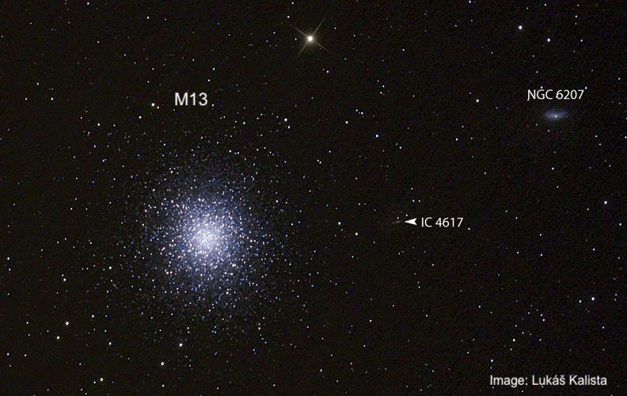
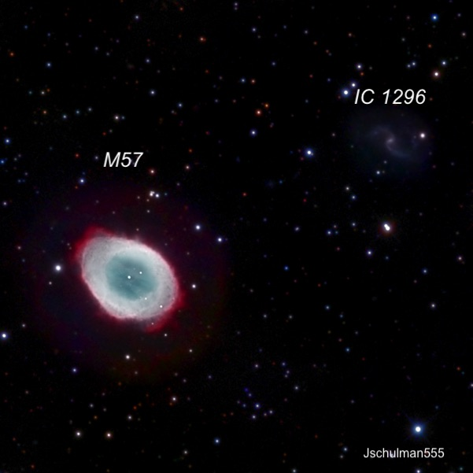
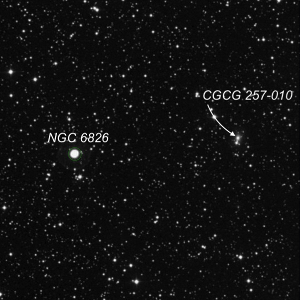
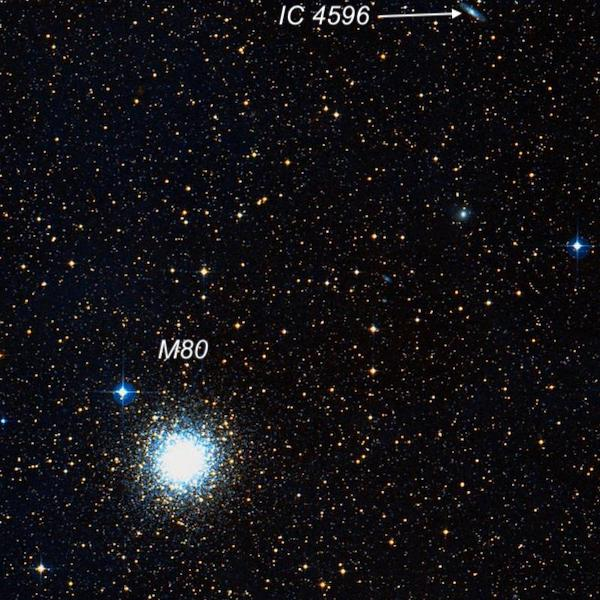
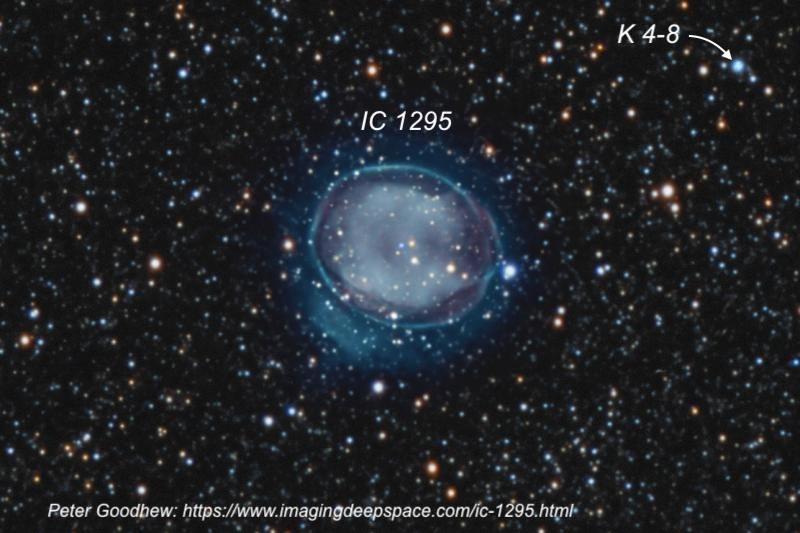

Celestial Odd Couples
On July 22, I joined a few northern California observers for comet viewing and a short night of deep sky viewing, as the Moon rose just after midnight. When I arrived at Lake Sonoma before sunset, there was a breeze, but the wind almost entirely died down by the time twilight ended. Skies were transparent (close to magnitude 6.5 naked-eye) and the seeing was steady at 280x to 380x. This site is located in the Sonoma County wine country, about 75 miles north of San Francisco).
Afterw viewing a couple of comets, I decided to take a look at several faint, challenging deep sky objects that share the same field with a bright showpiece:
1) M13 and IC 4617 (located 14' NNE)
2 M57 (Ring Nebula) and IC 1296 (located 4' NW)
3) NGC 6826 (Blinking Planetary) and CGCG 257-010 (11' W)
4) M80 and IC 4596 (25' NW)
5) IC 1295 and the stellar planetary nebula Kohoutek 4-8 (5' WNW).
Even if you wouldn't normally bother with these faint, featureless objects, in these cases the fields are simple to identify, they present a nice challenge, and if you strike out, there’s always the showpiece as a consolation prize.
IC 4617
16 42.1 +36 42; Hercules
Size 50" × 20"; PA = 29°
V = 15.2, B = 16.0
This challenging “companion” to M13 lies nearly midway between M13 and NGC 6207 (the more familiar companion to M13). IC 4617 appeared extremely faint, very small, and slightly elongated SSW-NNE. I wasn’t able to hold it continuously with averted vision. A 14th-magnitude star just 19" ESE forms the southwest vertex of a small parallelogram of 14th-magnitude stars with sides approximately 1.5' × 0.5'. Keep in mind that that you’re looking past M13, which lies 22,000 to 25,000 light-years away, to a galaxy roughly 500 million light years distant!

IC 1296
18 53 18.8 +33 03 58; Lyra
Size: 1.1' × 0.9'; Position Angle = 80°
V = 14.0; B = 14.8
This dim spiral galaxy appeared as an extremely faint and small glow with a very low surface brightness. Look for IC 1296 just 4' NW of M57 along the north side of a small rhombus with sides 1.5', consisting of four stars with magnitudes 10.5, 12, 13.5, and 13.5.

CGCG 257-010
19 43 39.5 +50 32 32; Cygnus
Size: 0.5' × 0.5'
V = 13.9; B = 14.6
CGCG 257-010 (also known as PGC 63573) is located only 11' west of NGC 6826, the Blinking Planetary. In fact, it lies in the same high power field, though most observers aren’t aware it’s there. It appeared faint, very small, elongated 3:2 N-S, and about 20" × 14". A 12th magnitude star is attached at the SSE edge, 20" from center. I had the impression that the galaxy was elongated, but this may have been due to the attached star. It appeared to have a smooth surface brightness, except a couple of times I glimpsed a very faint superimposed star or stellar nucleus with direct vision.

IC 4596
16 16 03.6 -22 37 31; Scorpius
Size: 1.5' × 0.4'; PA = 55°
V = 14.0; B = 14.8
This edge-on galaxy is situated 25' NW of the globular cluster M80. I found it extremely faint, elongated SW-NE, about 20" × 10", with a low, even surface brightness. A 14th magnitude star is close north (37" from center) and a triangle of 12th and 13th-magnitude stars lies 3' NNE.

K 4-8 = PK 25-4.1
18 54 20.0 -08 47 33; Scutum
Size: Stellar, V = 14.2
This young, stellar planetary is situated just 5' WNW of the attractive planetary nebula IC 1295 in Scutum. At 140x, it was seen as a 14.5-magnitude "star" in the middle of a shallow arc of four stars concave to the north. A slightly brighter star lies at the east edge of this arc. By blinking with an O III filter, K 4-8 (or Kohoutek 4-8) appeared to "turn on" and become brighter than the star at the east end of the arc.
As far as I know, I made the first-ever visual observation of this planetary on May 10, 1986, from the Sierra foothills.
